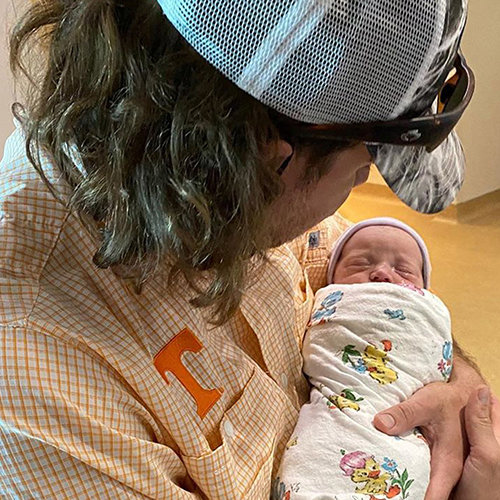
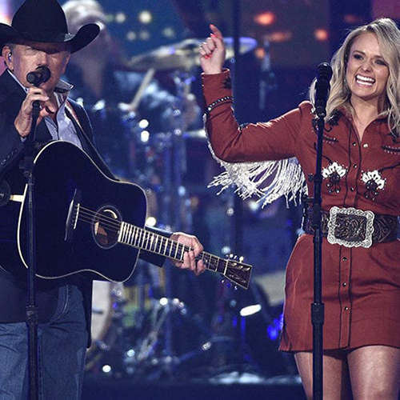
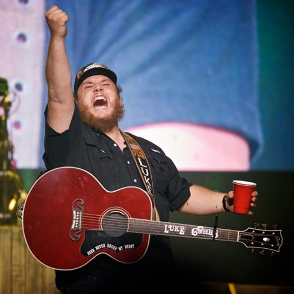
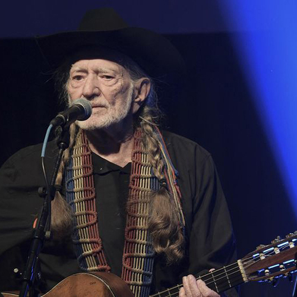
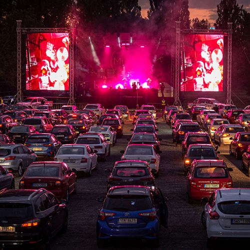
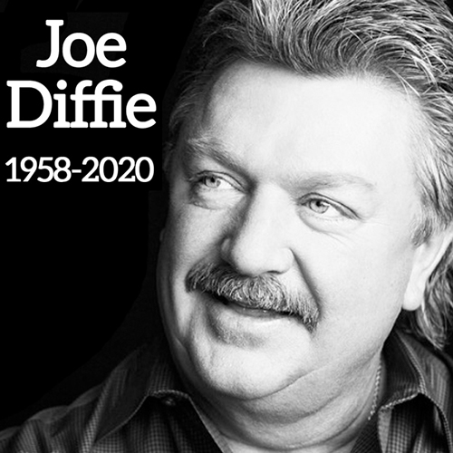
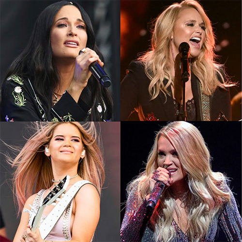
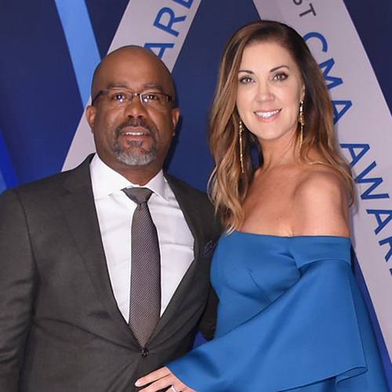

Morgan Wallen welcomed his son Indigo "Indie" Wilder to the world on July 10 in Nashville, Tennessee

ABC to air 3 hours of highlights from CMAs of the past in an effort to continue the 53-year-long tradition amidst times impacted by coronavirus

Luke Combs breaks Billboard record set by Taylor Swift

Willie Nelson makes country music history with latest Top 10 record

Drive-in concerts are on the rise to maintain social distancing regulations due to COVID-19

GRAMMY-winning legend Joe Diffie passes away from complications of coronavirus at age 61

Women accounted for 10% of country radio airplay in 2019

Darius Rucker and wife Beth Leonard split after 20 years of marriage